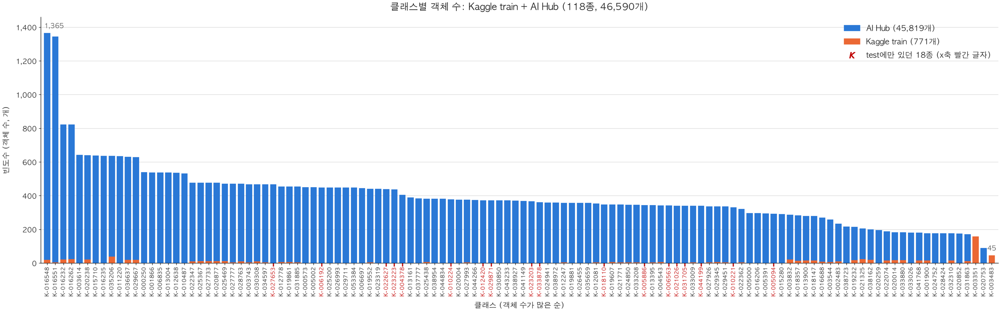

1 / 0
2차 EDA
합쳐도 불균형이 남아 학습 이미지 선택 방법 3가지를 비교합니다.
합치니 최대 ÷ 최소가 52배 → 30배로 줄었지만 불균형은 남았습니다. K-003483은 AI Hub에 없어 보충되지 않습니다.

| 방법 | 고르는 방식 | 모델 클래스 | train 사진 | 최대 ÷ 최소 |
|---|---|---|---|---|
| v2 | 객체가 적은 클래스부터 클래스별 200개를 채우도록 고른 사진 | 118 | 7,129 | 38.3배 |
| v3 | 대회 클래스(74종)가 하나라도 든 사진 | 96 | 8,974 | 46.8배 |
| v4 | 전체 사진. 대회 클래스 밖 알약은 others 한 클래스로 묶음 | 75 | 11,206 | 46.8배 (others 제외) |
← →/Space 이동 · N 노트 · Esc 목차